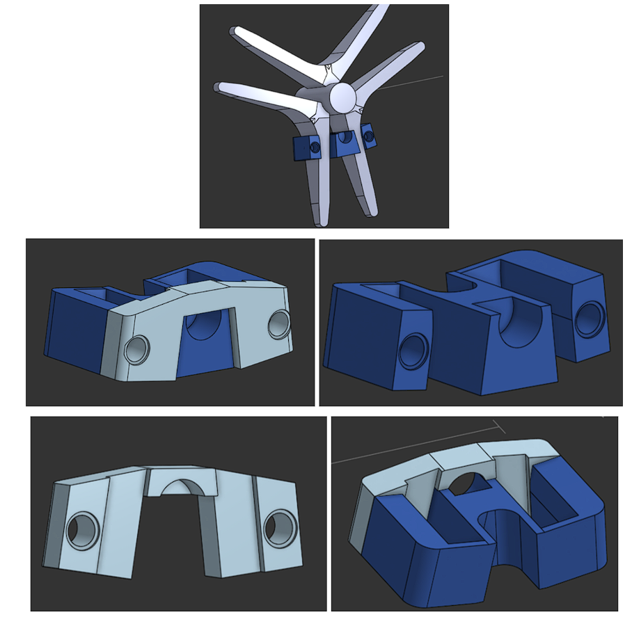

Adding modules on walkers to provide quantitative data to physiotherapists.
My role: Mechanical Jr. Executive
This multidisciplinary club project is centered around adding feedback sensors to a standard walker. This project is in the second iteration of design, as an initial prototype was created. In this new design, a modular approach will be taken. There are three unique modules planned, with two of each module being present (one on each side of the walker). Currently, the modules that are on the bottom of the walker are in the design and testing phase. These include a module to hold magnets on the walker wheel, which will be used with the second module’s hall effect sensor to detect the rotations of the wheel. The second sensor will also include other sensors, an ESP-32, and a battery so that the module can function by itself.
Initial Ideation
My role in this project was to direct my team and myself towards creating modular enclosure designs that mount the modules onto a variety of walker. To start with conceptualizing designs, I created a shared OneNote that was used to sketch out potential designs. The initial sketches include various attachment methods and mounting decisions for the modules.


Magnet Modules
One of the first CAD models I created for this project was a magnet enclosure/holder design that goes onto the spokes of an Evolution Piper Tall walker. This involved sketching the wheel spokes to ensure the enclosure fit as expected. The models were created in Onshape, which is the software that will be used for this project to increase the team’s ability to collaborate on modelling. The ability to allow for images to be used as a reference sketch resulted in easier and more accurate modelling of the wheel spokes.

After the spokes were modelled, the base of the module was created. Initial shaping was done around the modelled spokes so that the correct fit of the module was achieved. After the base was completed, the top portion was modelled, with the shaping based on the base of the module. The connection method used for the first prototype of this module were Lego pins, as they were strong enough to withstand the intended use of the module and were simple to attach and detach.
The hole in the center is for the magnets. Two orientations were created, a vertical stack (which was the initial design), and an updated horizontally stacked alignment (to account for the polarity of the magnets which is necessary for the hall effect sensor). The design was then printed using PETG filament to determine if the design was able to fit on the walker.
After test-fitting the design and editing the model, a finalized variant was created which used M3 nuts and bolts to secure the cover and the main body of the module while making it simple to assemble/disassemble.

Later on, I created enclosure designs for the Evolution Low and the Evolution Trillium walkers, as they had different spokes from the initial Piper Tall walker.
Insert image of print on walker.

Insert image of print on walker.
Adjustable Clamp Design
These were not the only designs that I created for this walker. I have also created adjustable clamp designs that attach onto other parts of the walker. These clamps are intended to hold the bulk of the module, which includes the ESP-32, battery, and other electronics (such as the PCB) that provide function to the sensors.
This design also started off with an initial prototype design based off the Piper Tall walker.

The adjustable feature was introduced.

The clamp design went through multiple iterations, and the current design was made. The current clamp design is adjustable in two directions, and uses M3 nuts and screws to keep everything secure and to assist with the size adjustment.
Insert images of printed clamp design.
Next Steps
This project is still in progress.
Clicking on the images will just redirect you to this same page.